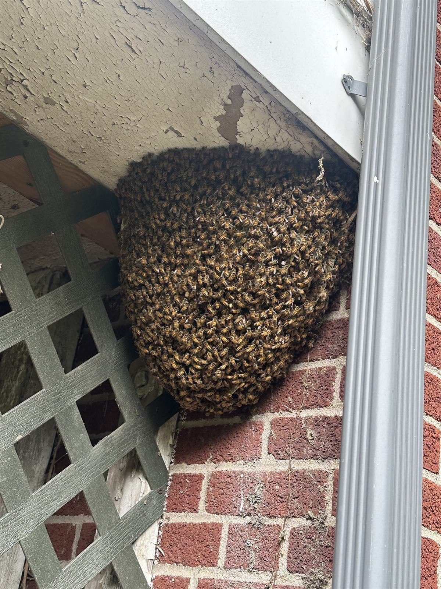

If bees are pouring in and out of a hole in your Harrisburg lawn, you almost certainly have yellow jackets — a wasp, not a bee, and the most aggressive stinging insect in Central PA. But not every ground nest needs killing. We identify first, then treat only what's actually a threat. Giant wasps digging many separate holes? Those are cicada killers — a different animal, and mostly harmless.
Same-Day Removal — Call or Text 717-379-3248Before anything else — if you found the nest by getting stung or by nearly running the mower over it, mark the spot from a distance and keep people and pets away from it, especially in August and September. Then text a photo to 717-379-3248 and we'll tell you what you have, usually within the hour. Identification is free, and it decides everything about what happens next.
Almost nobody calls us and says "I have a yellow jacket colony in a subterranean cavity." They say ground bees, or bees in the ground, or bees in my yard. That's the right instinct — you saw something striped going into a hole. But the phrase covers three very different situations, and only one of them is genuinely dangerous.
What you'll see: One single hole with heavy two-way traffic, like an airport runway. Fast, darting, shiny insects with bright, hard-edged yellow-and-black bands. Activity builds all summer and peaks August–October.
Why it matters: By late summer a colony can hold thousands of workers. They sting repeatedly, they defend the nest aggressively, and lawn vibration alone — a mower, a wheelbarrow, kids running — can trigger a mass response. This is the one that needs professional treatment.
What you'll see: Many small holes scattered across a patch of bare, sandy, or thin lawn, each with a tiny volcano of soil around it. Fuzzy, often smaller than a honey bee. Peak activity in spring, gone by early summer.
Why it matters: These are solitary native bees — every female digs her own burrow. They're excellent pollinators, they essentially never sting, and they disappear on their own in a few weeks. We will tell you when you have these and we won't treat them. If they bother you, the real fix is thickening the turf so there's no bare soil to dig in.
What you'll see: Big, round, very fuzzy bees going into an old mouse burrow, a compost pile, or under a shed. Far less traffic than a yellow jacket nest — dozens, not thousands.
Why it matters: Bumble bees are important pollinators in decline and are docile unless the nest is directly threatened. If the nest isn't in a high-traffic spot, the best move is to leave it — the colony dies off naturally in fall. If it's next to a doorway or a kid's swing set, we can often relocate rather than exterminate.
What you'll see: Amber-brown, fuzzy, heavy deliberate flight, often with visible pollen on their legs. Rare in the ground, but it happens in old rodent burrows and hollow stumps.
Why it matters: We're working beekeepers. Honey bees get live removal and relocation — we don't spray them. About 1 in 3 "yellow jacket" calls turns out to be honey bees, which is exactly why we identify before we treat.
From a safe distance — 15 feet is plenty — look at two things: how many holes and how much traffic.


Every August we get called out to yards where someone tried a home remedy first, and the nest is now angrier and harder to treat. For the record:
If anyone has been stung and shows signs of an allergic reaction — swelling beyond the sting site, trouble breathing, dizziness — call 911 first. Then call us.
Straightforward and quick when it's done right, and we do these during the day — no waiting until dark. There are two ways it goes:
Either way it's done in full protective equipment, and we flag the area so nobody walks on it for 48 hours. Most colonies are knocked down within a day or two, and we come back and confirm.
Cost: ground nests run $165–$225. If there are multiple nests on the property, we bundle. Estimates are free over the phone, and a texted photo usually gets you an exact number without a visit.
The colony you treated won't — yellow jacket colonies die off every fall and only new queens overwinter. But a good nest site tends to get reused, so if your yard has a spot that's produced a nest two years running, ask about a spring preventive treatment around the foundation and known sites. That's much cheaper than an August emergency.
All of the City of Harrisburg (17101–17104, 17109, 17110) — Midtown, Allison Hill, Uptown, Bellevue Park, Boas Heights, Italian Lake. Inner suburbs: Penbrook, Paxtang, Steelton, Highspire. Outer suburbs: Colonial Park, Lower Paxton, Susquehanna Township, Linglestown. Plus Hershey, Hummelstown, Mechanicsburg, Camp Hill, Palmyra, Middletown, Carlisle, and Lebanon.
Free identification, usually within the hour. If it's yellow jackets we'll come out same-day. If it's mining bees or bumble bees, we'll tell you that and you won't pay us a dime. Locally owned, PA-licensed pesticide applicator, fully insured — serving Harrisburg and all of Dauphin County.
Call or Text 717-379-3248